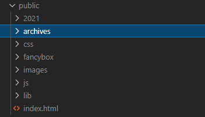
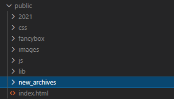

对_config.yml文件内容举例说明.
更改首页
-
首先要改掉默认的列表首页
index_generator: # 首页生成的路径, 默认是生成一个文章列表作为首页 path: 'xxx' # 只要不是'/'或者''就行 -
自己编写首页
在source文件夹下创建index.md文件, 该文件会自动放在public文件夹下, 此时由于index_generator生成的页面被移到别处, 所以不会覆盖.
修改文件样式
- 在浏览器中查看样式选择器, 在vscode中全工程搜索样式选择器, 定位文件为
/public/css/default.css - 在
/public/css/default.css直接修改看效果 - 将
/public/css/default.css复制到/source/css/default.css下
其他参数理解
Directory
xxxx_dir:是用来设置生成静态文件(public)中的文件名称.
默认archive_dir: archives会在public文件夹中生成archives,可以通过http://127.0.0.1:5003/archives/来访问.

当我们修改archive_dir: new_archives,则会生成new_archives,访问时也需要通过
http://127.0.0.1:5003/new_archives/.
也可以修改为 archive_dir: /,则会在根目录生成 index.html,这样就可以在首页直接显示archive了(要更改index_generator.path,不然会被覆盖).
# Directory
source_dir: source
public_dir: public
tag_dir: tags
archive_dir: archives
category_dir: categories
code_dir: downloads/code
i18n_dir: :lang
skip_render:index_generator
同 Directory,index_generator.path限定了文章列表页的路径,默认是空,既/.当使用其他页面,比如archives作为首页时,要先将index_generator.path,定位到非/根路径才行
# Home page setting
# path: Root path for your blogs index page. (default = '')
# per_page: Posts displayed per page. (0 = disable pagination)
# order_by: Posts order. (Order by date descending by default)
index_generator:
path: ''
per_page: 10
order_by: -date